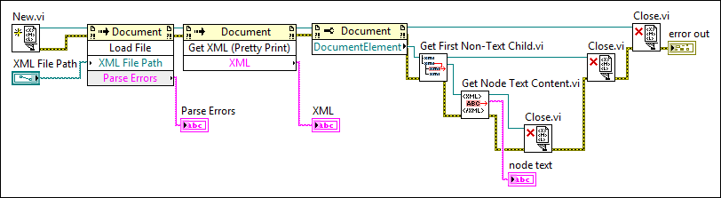

Find related examples
Find related examples
Extensible Markup Language (XML) is a platform-independent subset of Standard Generalized Markup Language (SGML) that you can use to store and exchange information. When you work with XML documents, you can use a parser to extract and manipulate data without translating the XML format directly. For example, the Document Object Model (DOM) Core specification defines a programming interface for creating, reading, and manipulating XML documents. The DOM Core specification defines the properties and methods an XML parser must support. The XML parser in LabVIEW is the Xerces 2.7 parser, which uses a document object model (DOM).
Use the XML parser and the XML Parser VIs and nodes to read, write, or manipulate XML documents.
The XML Parser VIs allow you to access a cross-platform XML parser in LabVIEW, as shown in the following block diagram.

Refer to the labview\examples\File IO\XML\Parse XML directory for examples using XML Parser VIs.
Find related examples
The New VI opens an XML parser session and returns an XML Document reference. You can create an XML document, load an existing document into the XML parser, or configure document settings.
To manipulate an existing file, use the Load File method to load the XML document into memory. LabVIEW can access the XML document unless the XML parser encounters errors within the document that prevent the XML parser from parsing the document. The Parse Errors output displays these XML-related errors.
Use the Get XML (Pretty Print) method to pretty print the contents of the XML document to a string. Pretty printing makes XML data easier to read by adding white space and end-of-line (EOL) characters to the XML data. Use the Get XML method if you do not need to pretty print XML data. In the previous block diagram, the XML output displays the contents of the XML document.
The Close VI closes the XML Document reference and returns any errors the VI encounters.
 |
Note��The XML parser ignores white spaces only when it is performing validation. Otherwise, the parser includes white spaces as child nodes. |
You can configure the XML parser to determine if a specific XML document is valid. A document is valid if the document complies with an external vocabulary. In the LabVIEW parser, the external vocabulary can be a Document Type Definition (DTD) or a schema.
Some parsers only parse the XML and do not validate the XML prior to loading the file. The parser in LabVIEW is a validating parser. A validating parser validates an XML document against a DTD or schema and reports invalid items it finds. You must ensure that a specific document is the form and type that you expect. Using a validating parser eliminates the need to create custom validation code for each type of document.
The XML parser reports validation errors in the Parse Errors output of the Load File method.
|
Note��The XML parser validates the document or XML string when LabVIEW loads the document or string. If you make changes to the document or string and want to validate the document or string with the changes, use the Load File or Load String methods to reload the document or string. The parser then validates the content again. |
Refer to the Load XML with Parser API VI in the labview\examples\File IO\XML\Parse XML directory for an example of using the Load File method.
 Open example�
Find related examples
Open example�
Find related examples
You must configure all instances of the XML parser if you want to activate all possible features. You can configure the parser by setting properties on the Document class.
Place a Property Node (XML) on the block diagram and examine the available properties. The Property Node (XML) includes the following properties and methods:
|
Note��The XML parser ignores white spaces only when it is performing validation. Otherwise, the parser includes white spaces as child nodes. For example, the first child of a tag is likely to be white space rather than the next element. |
|
Note��If you set this property to Never and set the Load External DTD property to TRUE, LabVIEW parsers the document but does not return validation errors. |
Refer to the labview\examples\File IO\XML\Parse XML directory for examples using XML Parser VIs.
Find related examples
XML Path Language (XPath) is a language for locating XML nodes, such as elements, attributes, text, and so on. Use the Get First Matched Node VI to locate the first node that matches the XPath expression you specify. Use the Get All Matched Nodes VI to locate all nodes that match the XPath expression you specify. These VIs use the context node you specify to locate nodes. The context node describes the location in an XML document from which LabVIEW performs an XPath query. Therefore, you can specify a relative or absolute XPath expression to query the XML document.
LabVIEW supports XPath version 1.0, which is defined by the World Wide Web Consortium (W3C).
Refer to the Parse XML String for Multiple Nodes VI in the labview\examples\File IO\XML\Parse XML directory for an example of using the Get All Matched Nodes VI.
Open example�